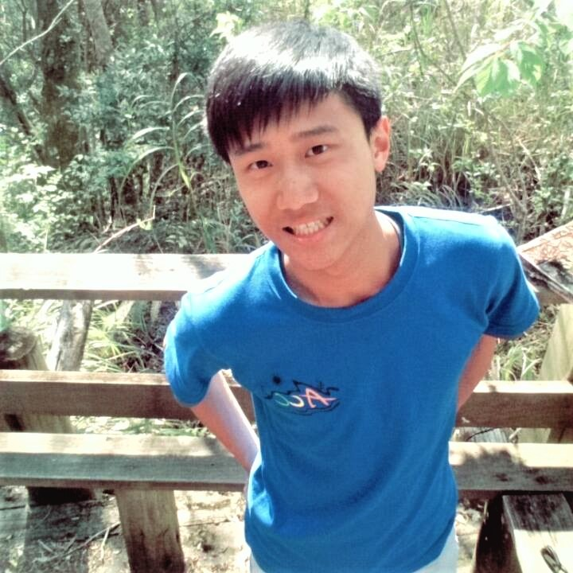

公司職員簡介
姓名 : 趙得宇
職稱 : 2016原文假日營表演舞股長
入社年份 : 2015-2017
特殊表現 : 原文熱舞社社長、ㄐㄩ寶貝的得宇寶貝
員工表現

妤
認識你應該是假日營同小，參加游泳比賽的怪人，畢業快樂老師希望逕博ㄉ人才
祈瑋
雖然沒給你帶過，不過有一起跳過期末社大的舞，不愧是舞社的真的猛~畢業快樂喔
硬魚
各種方面來說你都很酷然後又多才多藝哈哈，很羨慕你一旦下定決心就要把事情做到最好的那種個性，碩班加油啦你會幸福的！
珊羽
大一表舞雖然你是負責男舞，比較少接觸到，但之前有次驗收你帶林益田位子，整個感受到是完全不同level啊，真得不愧是舞社(? 總之，畢業快樂啦。
匿名小粉絲
趙哥的帥度不同反響，跳起舞來迷倒眾生，有點久沒看到你了，希望你過的很好。
ㄐㄩ
得宇寶貝❤️大一表演舞的時候覺得你這個人長得帥又會跳舞根本人生勝利組，雖然練舞對我來說壓力很大，但是跟你一起嘴炮（或是嘴砲你跟許家瑜）實在是非常舒壓且愉悅的事情^^沒想到這麼快你就要畢業了，說了三年要一起吃飯好像只約成功一次，畢業之後拜託不要忘記我，偶爾殼以回來清大請我吃飯ㄚ，畢業快樂愛你❤️
宥儒
很懷念假日營練舞的時光，雖然有點累，但真的過得很開心，想必是你跟許家瑜的功勞，而且你那時候真的教的很棒，我想是因為假日營表演舞，才讓我知道跳舞真的很有趣，還有你跳舞真的是很帥，你以後一定會越來越強，最後畢業快樂!